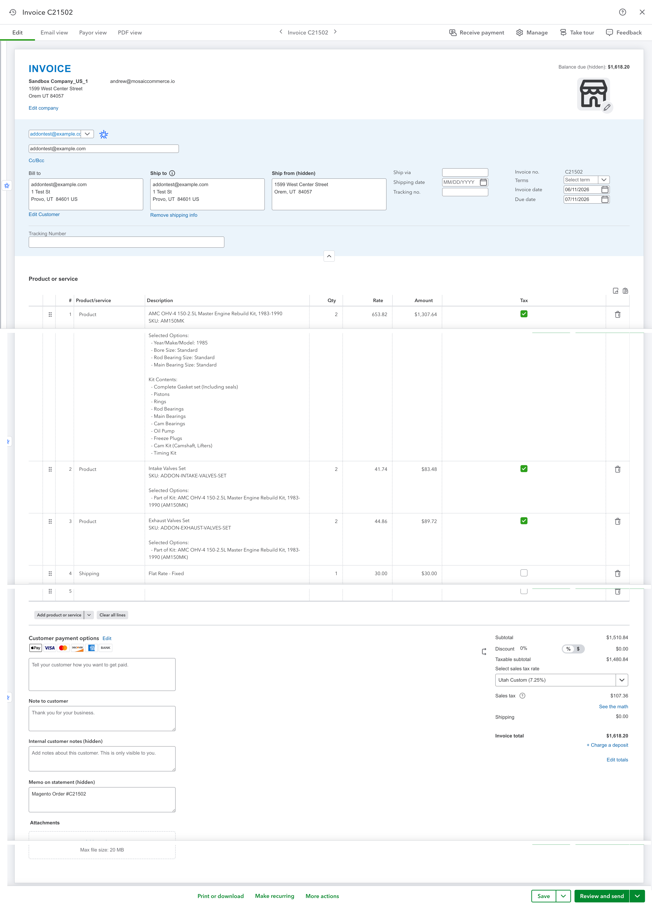
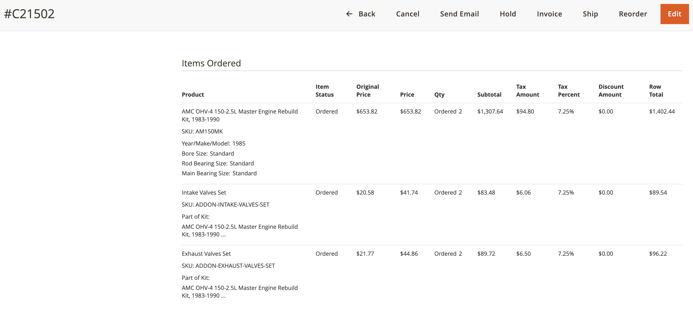
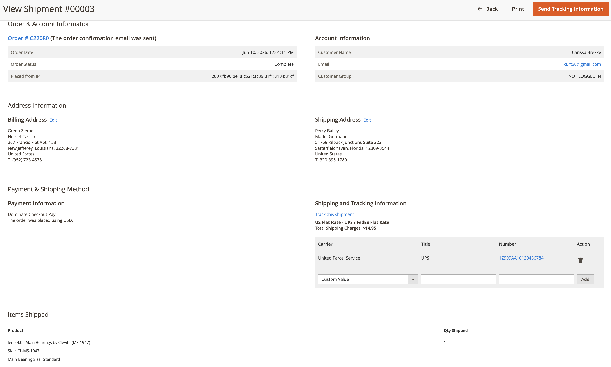
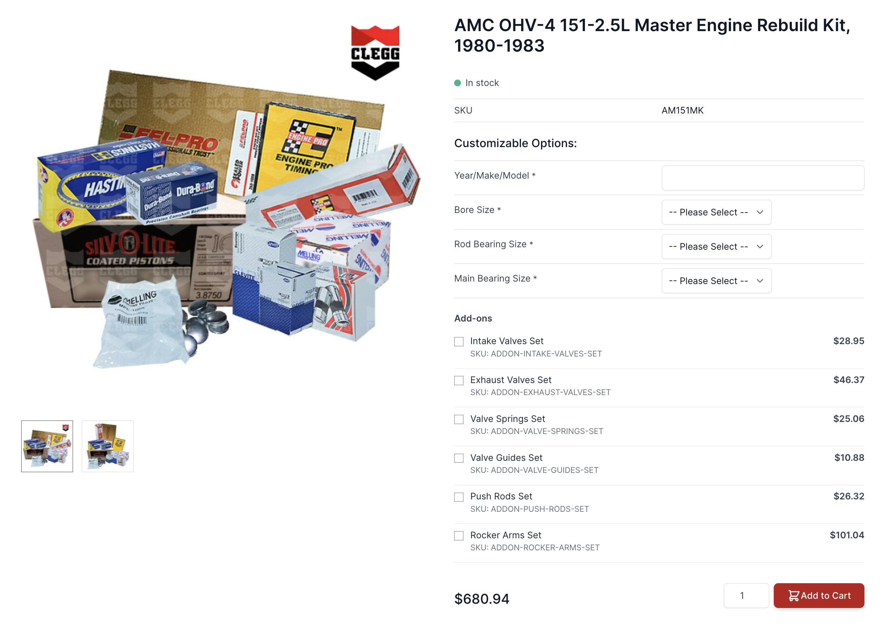
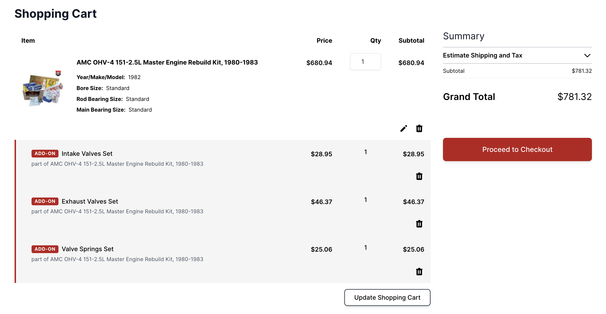
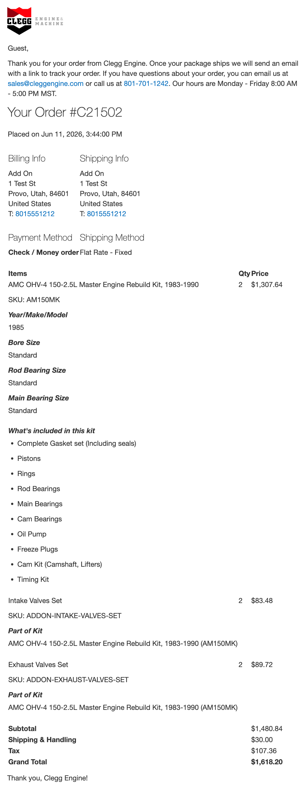

Both of these are essentially done. What they need now is your eyes and a few decisions, so we can take them the last step to production. Here's what each one does and exactly what I need from you.
Orders flow automatically into QuickBooks as invoices; tracking entered in QuickBooks flows back to Magento as a shipment.
Built & verified end-to-end on the staging sandboxToday this is a manual, double-entry job. This integration closes the loop in both directions, with no copy-paste between systems:



Add-ons appear as checkboxes on the kit's product page and become their own line items through the entire order lifecycle.
Built & smoke-tested on staging across all three kit familiesAdd-ons (intake/exhaust valve sets, cam kits, harmonic balancers, and so on) used to be buried as options on the parent product. Now each add-on a customer selects becomes its own separate line item — in the cart, on the order, in the shipment email, and on the QuickBooks invoice — while keeping the same one-click experience for the customer.



These open the real working pages on the staging site. You'll be asked to sign in — use your @cleggengine.com email address and enter the one-time code it sends you.
Engine Rebuild Kit — AMC OHV-4 151 Master Rebuild KitOpen ↗ Hemi Stroker — Hemi 5.7L '03–'08 CamshaftOpen ↗ Jeep Stroker — Jeep 4.0L Stage 3 Performance Camshaft KitOpen ↗Both systems are at the same point: built, on staging, and waiting on a few decisions rather than more build time. A standing 30-minute weekly call is the fastest way to keep the “last 10%” of each project from sitting for weeks — I can demo live and we decide in the room.
To unblock the two systems above, I need: